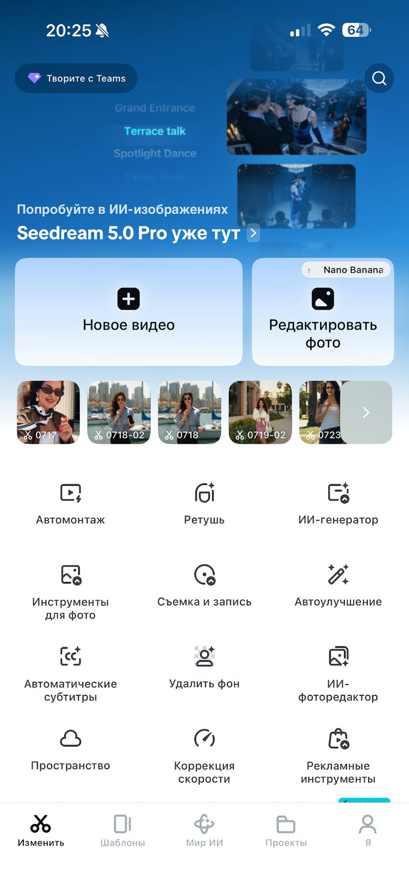
Чтобы открыть все инструменты редактирования, просто нажмите на нужный клип на таймлайне. Именно здесь происходит большая часть монтажа.
После нажатия на клип внизу появляется лента инструментов. Дальше разбираем те, которыми пользуетесь в каждом ролике.
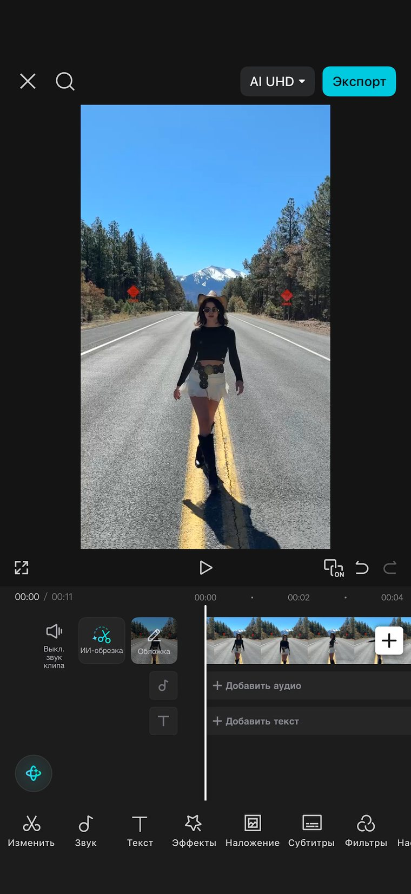
Позволяет разрезать видео на отдельные части. Поставьте бегунок в нужное место и нажмите «Разделить».
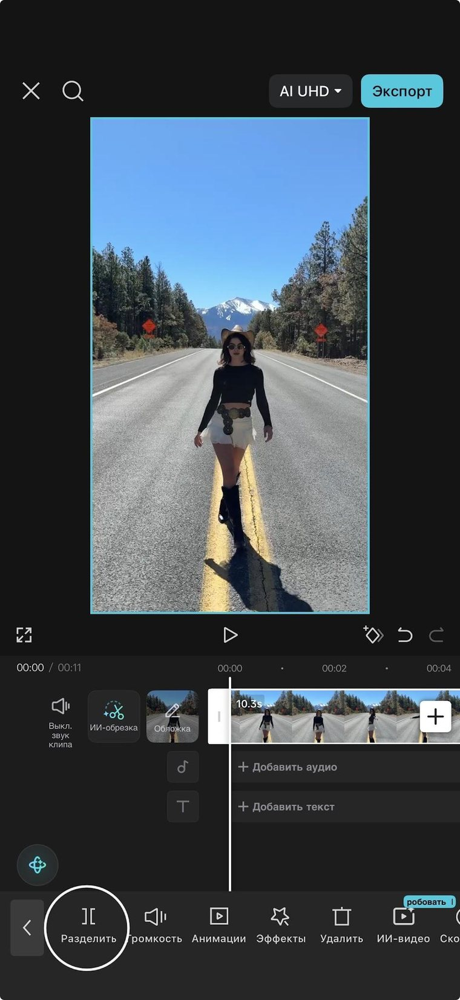
Позволяет увеличить или уменьшить громкость выбранного клипа. Если оригинальный звук не нужен, его можно полностью отключить. Также можно уменьшить шум на клипе.
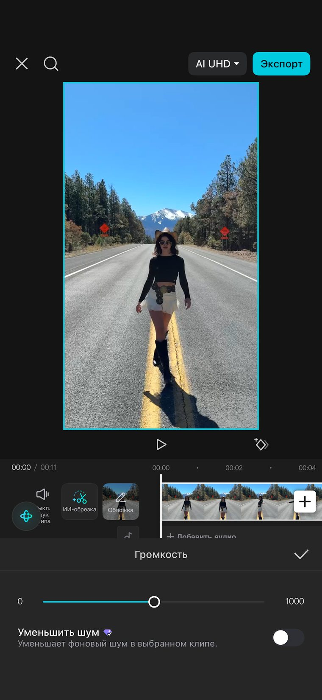
Добавляет красивое и плавное появление (Ввод) или исчезновение (Вывод) кадра. Эти же анимации можно использовать для текста, стикеров и наложений, чтобы монтаж выглядел более профессионально.
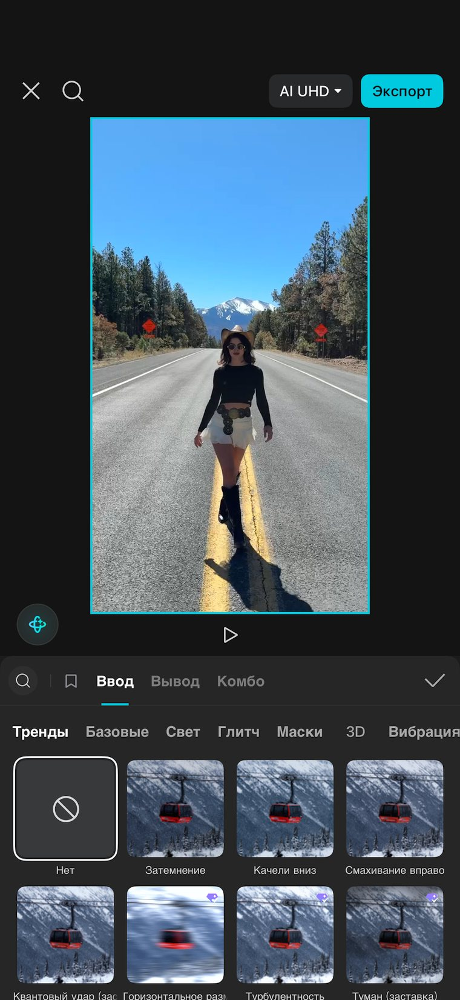
Позволяет изменить скорость видео.
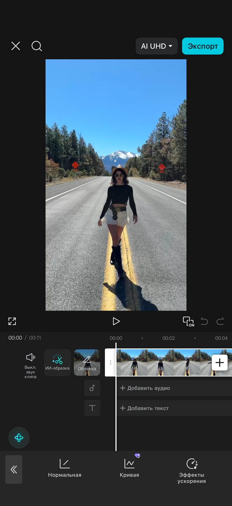
Незаменимый инструмент, если вам нужно подстроить смену кадров под ритм музыки.
CapCut автоматически расставит жёлтые точки в ритм музыки. После этого можно подрезать видео так, чтобы каждая склейка попадала точно в бит.
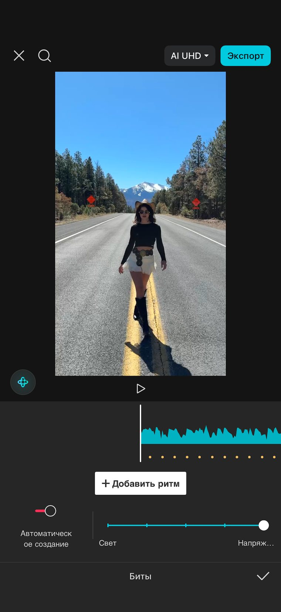
Здесь можно:
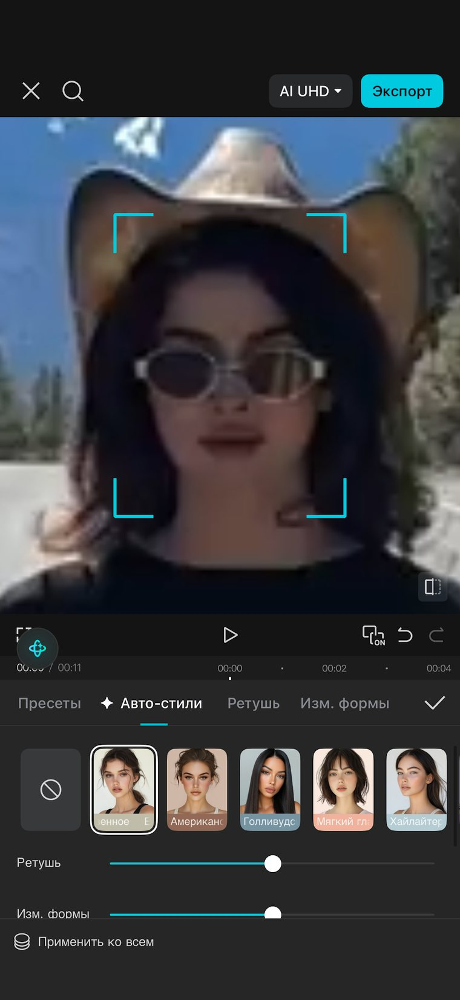
В этом блоке собраны инструменты для спасения и обработки оригинального звука.
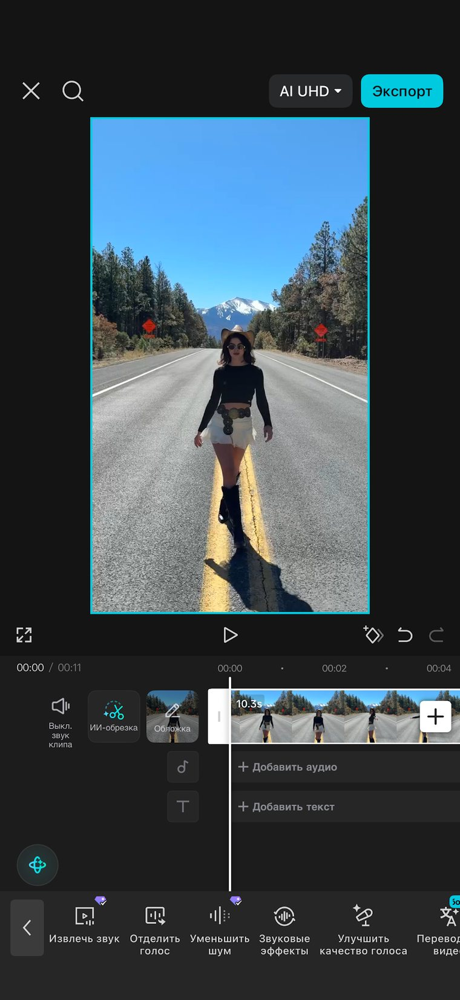
Позволяет скрыть часть изображения и создать интересные переходы между двумя видео. Можно использовать круг, линию, градиент и другие формы. Чаще всего применяется для креативного монтажа.
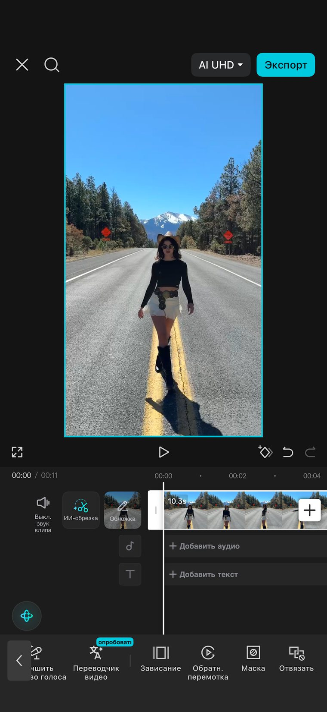
Эти инструменты применяются ко всему проекту или добавляются поверх видео. Чтобы их увидеть, снимите выделение с клипа, нажав на пустое место таймлайна.
Здесь находится всё, что связано со звуком. Вы можете:
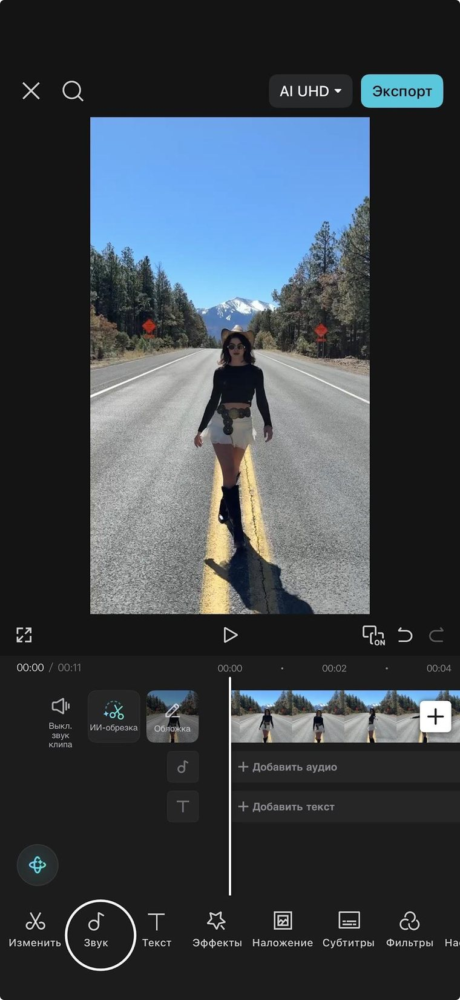
Глобальный раздел для работы со звуком проекта.
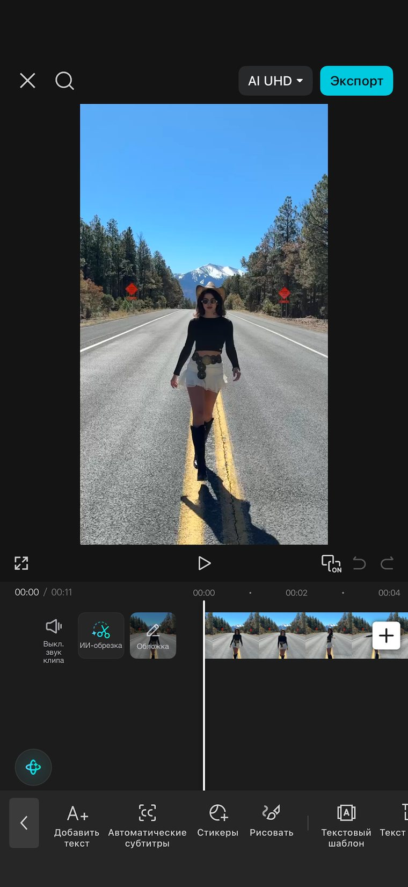
Здесь находятся различные видеоэффекты. Мы используем их не очень часто, но иногда они помогают сделать монтаж более интересным и добавить акценты.
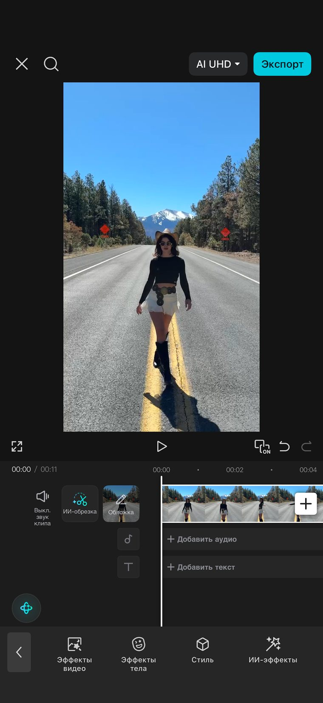
Здесь мы нажимаем кнопку «Добавить наложение» и можем поместить поверх основного видео дополнительные материалы. Это могут быть футажи, вырезанные картинки, элементы в виде стикеров или скриншоты, чтобы проиллюстрировать то, о чём идёт речь в ролике.
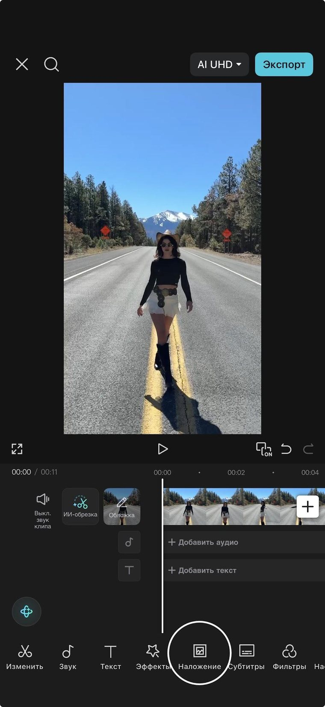
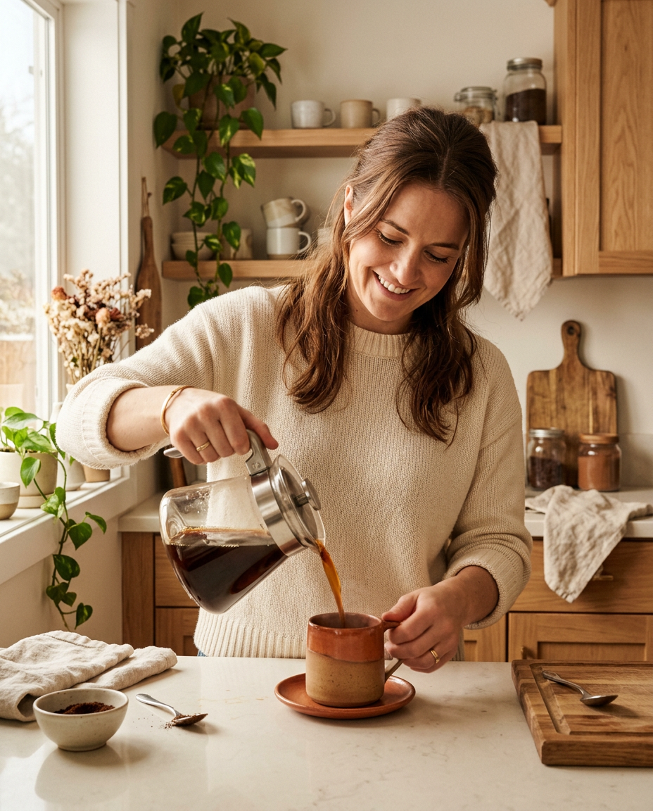
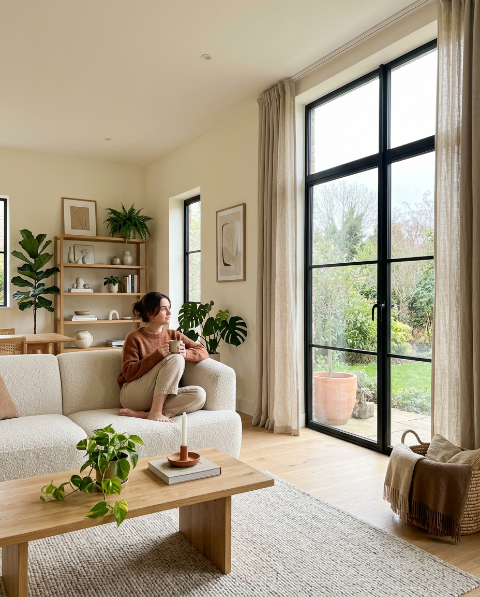
Здесь также можно автоматически создать субтитры для всего видео. После генерации их можно:
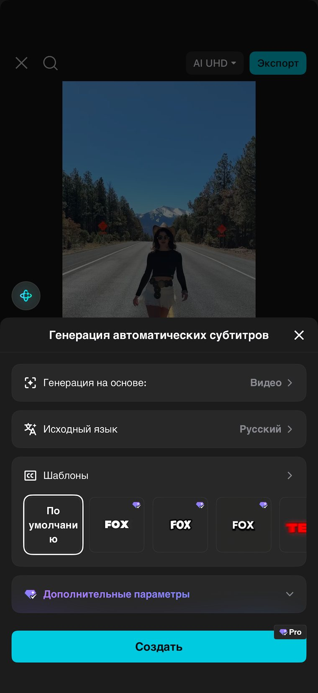
Фильтры — готовые цветовые пресеты, которые можно отрегулировать по интенсивности.
Настроить — ручная цветокоррекция. Здесь мы ползунками настраиваем яркость, контрастность, насыщенность цветов, тени, температуру и другие параметры, чтобы картинка выглядела дорого.
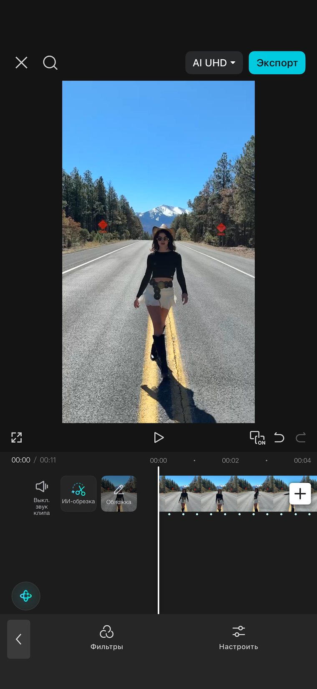
Перед тем как сохранить видео, обязательно проверьте. Отметки сохраняются в браузере, можно вернуться позже.
Смонтированный за час ролик, который вышел сегодня, работает лучше, чем идеальный, который вы доводите третью неделю. Возьмите один клип и пройдите по этому гайду прямо сейчас.
Готовые структуры: что говорить в первые секунды, чем удерживать внимание и чем закрывать. С таймингом по каждому блоку.